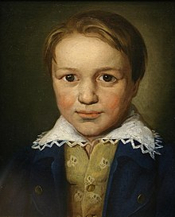

Происхождение
Людвиг ван Бетховен родился в 1770 году в Бонне 16 декабря, крещён там же 17 декабря 1770 года.
Его отец, Иоганн ван Бетховен (1740—1792), был певцом-тенором в придворной капелле. Мать, Мария-Магдалина, до замужества Кеверих (1748—1787), была дочерью придворного шеф-повара в Кобленце. Родители Людвига поженились в 1767 году.
Дед, Людвиг Бетховен (1712—1773), был родом из Мехелена (Южные Нидерланды). Он служил в той же капелле, что и Иоганн, сначала певцом (у него был бас), а затем — капельмейстером.
Ранние годы
Отец композитора хотел сделать из своего сына второго Моцарта и стал обучать игре на клавесине и скрипке. В 1778 году в Кёльне состоялось первое выступление Людвига. Однако чудо-ребёнком Бетховен не стал, и отец же перепоручил мальчика своим коллегам и приятелям. Один обучал Людвига игре на органе, другой — на скрипке.
В 1782 году в Бонн приехал органист и композитор Кристиан Готлоб Нефе. Он стал настоящим учителем Бетховена. Нефе сразу понял, что у мальчика талант. Он познакомил Людвига с «Хорошо темперированным клавиром» Баха и произведениями Генделя, а также с музыкой старших современников: Ф. Э. Баха, Гайдна и Моцарта. Благодаря Нефе было издано и первое сочинение Бетховена — вариации на тему марша Дресслера. Бетховену в то время было двенадцать лет, и он уже работал помощником придворного органиста.
После смерти деда материальное положение семьи ухудшилось. Людвигу пришлось рано бросить школу, но он выучил латынь, итальянский и французский, много читал. Уже став взрослым, композитор в одном из писем признался.
«Не существует сочинения, которое было бы для меня чересчур учёно; не претендуя ни в малейшей степени на учёность в собственном смысле слова, я всё же с детства стремился понять сущность лучших и мудрейших людей каждой эпохи».